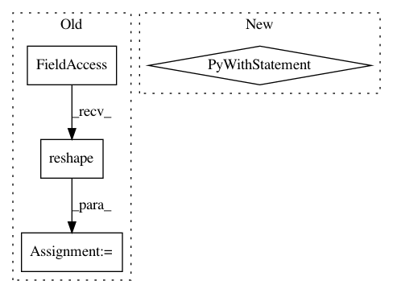

193c2dffbf492f832d2914d16b12f7ba8afc3979,models/official/mnasnet/mnasnet_main.py,,build_model_fn,#Any#Any#Any#Any#,263
Before Change
// expects [batch_size, ...] Tensors, thus reshape to introduce a batch
// dimension. These Tensors are implicitly concatenated to
// [params["batch_size"]].
gs_t = tf.reshape(global_step, [1])
loss_t = tf.reshape(loss, [1])
lr_t = tf.reshape(learning_rate, [1])
ce_t = tf.reshape(current_epoch, [1])
host_call = (host_call_fn, [gs_t, loss_t, lr_t, ce_t])
else:
train_op = None
After Change
if params["add_summaries"]:
summary_writer = tf2.summary.create_file_writer(
FLAGS.model_dir, max_queue=params["iterations_per_loop"])
with summary_writer.as_default():
should_record = tf.equal(global_step % params["iterations_per_loop"],
0)
with tf2.summary.record_if(should_record):
tf2.summary.scalar("loss", loss, step=global_step)
tf2.summary.scalar("learning_rate", learning_rate, step=global_step)
tf2.summary.scalar("current_epoch", current_epoch, step=global_step)
// Batch normalization requires UPDATE_OPS to be added as a dependency to
// the train operation.
update_ops = tf.get_collection(tf.GraphKeys.UPDATE_OPS)
with tf.control_dependencies(update_ops + tf.summary.all_v2_summary_ops()):
train_op = optimizer.minimize(loss, global_step)
In pattern: SUPERPATTERN
Frequency: 3
Non-data size: 4
Instances
Project Name: tensorflow/tpu
Commit Name: 193c2dffbf492f832d2914d16b12f7ba8afc3979
Time: 2019-12-03
Author: gardener@tensorflow.org
File Name: models/official/mnasnet/mnasnet_main.py
Class Name:
Method Name: build_model_fn
Project Name: ilastik/ilastik
Commit Name: 5a0373b2cdb1222e7c9816c0fc88e22fda743647
Time: 2014-08-13
Author: bergs@janelia.hhmi.org
File Name: lazyflow/operators/opBlockedArrayCache.py
Class Name: OpBlockedArrayCache
Method Name: setupOutputs
Project Name: sony/nnabla-examples
Commit Name: 4f031d76c9a5b1e61080a4be62eee6f1ccd584fa
Time: 2019-05-14
Author: Akio.Hayakawa@sony.com
File Name: speech-synthesis/WaveNet/train.py
Class Name:
Method Name: train